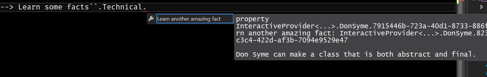
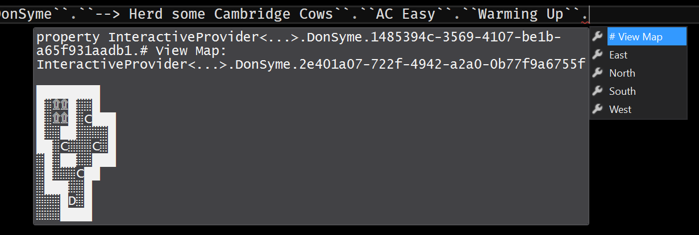

Don Syme 2.0 : Cow Herding Edition Type Provider
Though the mystery man Don Syme, Father of F#, is generally heralded for various software based innovations and other computer related things, it transpires he has talents in other unrelated areas…
Specifically, Don is master cow herder (yes, as in moo-cows). Whilst this might seem unlikely, I present to you a legendary but scarce video, with Don in action whilst attempting to get to work across the treachrous cow infested fields of Cambridge. Behold! (Watch the whole thing for a bonus cow at the end, tired from the workout)
Type Providers?
It has been quite some time since I wrote a sensible type provider, well overdue I would say. I decided I would give the Don Syme Type Provider a facelift to celebrate his lesser-known talents of cow herding.
The original type provider produces an endless stream of facts about the mystery man himself. This of course remains, but now you can also specify if you are interested only in more technical / geeky facts as is evidenced in this picture.

(see the last section of this post for instructions on obtaining and running the type provider)
Cows!
The primary new feature, however, is a type system game where you can play as Don, attempting to herd the Cambridge Cows back into their cow sheds. Here is a picture of a game in progress:

Legend:
"C" -> A Cow
"░" -> empty field
"D" -> Don
"*" -> A cow in a cow shed
"۩" -> A cow shed
"█" -> Wall
The aim is to get the cows into their cow sheds. Don is able to push the cows around, but only if there is an empty space behind them! You will quickly see this is really quite difficult and will require some thought to succeed.
Sokoban!
The astute and well gamed reader may have noticed this is a remixed version of the popular game Sokoban. It is in fact is a full Sokoban implementation in a type provider, that uses the .slc Sokoban level format. Let's have a look at how it works.
Model
We can model the entire game in a couple of unions and records (you can read the source of this file here)
1 2 3 4 5 6 7 8 9 10 11 12 13 14 15 16 17 18 19 20 21 22 23 24 25 26 27 28 29 30 31 32 33 34 35 |
type Cambridge = | Cow | Field | Don of bool // true if on a shed | Shed of bool // true if a cow is in the Shed | Wall with override x.ToString() = match x with | Cow -> "C" | Field -> "░" | Don _ -> "D" | Shed true -> "*" | Shed false -> "۩" | Wall -> "█" type Direction = | North | South | East | West type Location = int * int type LevelData = { Id : string Width : int Height : int Data : Map<int*int, Cambridge> } type LevelCollection = { Title : string Description : string Copyright : string Levels : LevelData list } |
Level Files
The .slc files are simply XML files, containing a set of levels. We can use the XML type provider to do the hard work for us (yes, you can use type providers in other type providers). The current directory is scanned for .slc level collection files at compile time, and each one is turned into a Level Collection record.
1 2 3 4 5 6 7 8 9 10 11 12 13 14 15 16 17 18 19 20 21 22 23 24 25 26 27 28 |
let readLevels (root:CowLevel.SokobanLevels) = // reads an entire .slc sokoban level collection // do we care about memory? of course not! { Title = root.Title Description = root.Description Copyright = root.LevelCollection.Copyright Levels = root.LevelCollection.Levels |> Array.map(fun level -> { Id = level.Id Height = level.Height Width = level.Width Data = [for row = 0 to level.Ls.Length-1 do let chars = level.Ls.[row].ToCharArray() for col = 0 to chars.Length-1 do let c = match chars.[col] with | ' ' -> Field | '#' -> Wall | '$' -> Cow | '.' -> Shed false | '*' -> Shed true | '@' -> Don false | '+' -> Don true | c -> failwithf "unexpected character '%c'" c yield (row,col),c] |> Map.ofList }) |> Seq.toList } |
Piece of cake, it basically writes itself!
Logic
Now for the most difficult part, which is the encoding of the game rules. The type provider will always allow Don to attempt to move in any direction. We must work out if the movement is valid, and update the game state if it is.
First up, find Don's current location in the map, and whether he is "standing" on a shed or field
1 2 3 4 |
let moveDon direction map = let (dx,dy),don = Map.pick(fun k v -> match v with Don _ -> Some(k,v) | _ -> None) map // Don can only ever be standing on a open field or shed tile let oldTile = match don with Don true -> Shed false | _ -> Field |
Next we will need to work out what tiles will be affected by the move. This will always potentially be the two tiles in the direction Don is attempting to move. We can do a bit of trickery here to calculate the indexes and extract the map tiles, and if the index is out of bounds we ignore it. This will return a list of 1 or 2 tiles we can then match on to see what happens.
1 2 3 4 5 6 7 8 |
match direction with | North -> [-1,0;-2,0] | South -> [1,0;2,0] | East -> [0,1;0,2] | West -> [0,-1;0,-2] |> List.choose(fun (x,y) -> Map.tryPick(fun k v -> if k = (dx+x,dy+y) then Some(k,v) else None) map) |> function |
We can say that if Don is attempting to move onto a field, that is always valid regardless of the second tile. The same holds true for empty cow sheds
1 2 3 4 5 6 7 8 9 10 11 12 13 |
// Don can always move onto a dirt tile | [(x,y),Field] | [(x,y),Field;_] -> map |> Map.add (x,y) (Don false) |> Map.add (dx,dy) oldTile // same as above, for moving onto a field without a cow in it | [(x,y),Shed false] | [(x,y),Shed false;_] -> map |> Map.add (dx,dy) oldTile |> Map.add (x,y) (Don true) |
In these cases we simply place Don in the new location, and replace his old location with whatever tile he was "standing" on before.
The slightly more complex cases are of pushing cows around. However, using the pattern matching, the solution to this problem, like a lot of this, basically writes itself.
1 2 3 4 5 6 7 8 9 10 11 12 13 14 15 16 17 18 19 20 21 22 23 24 25 26 27 28 29 30 |
// Valid cow cases. We can move a cow forward if there is an empty space behind them. // Shed true is also a cow but must then be replaced with a Don true | [(x,y),Cow; (x',y'),Field] -> map |> Map.add (dx,dy) (oldTile) |> Map.add (x',y') Cow |> Map.add (x,y) (Don false) // Moving a cow from a shed onto a field | [(x,y),Shed true; (x',y'),Field] -> map |> Map.add (dx,dy) (oldTile) |> Map.add (x',y') Cow |> Map.add (x,y) (Don true) // moving a cow from a shed or field to a shed | [(x,y),Shed true; (x',y'),Shed false] -> map |> Map.add (dx,dy) (oldTile) |> Map.add (x',y') (Shed true) |> Map.add (x,y) (Don true) | [(x,y),Cow; (x',y'),Shed false] -> map |> Map.add (dx,dy) (oldTile) |> Map.add (x',y') (Shed true) |> Map.add (x,y) (Don false) // all other cases are invalid. | _ -> map |
And that is the entire game done, except a couple of auxillary functions to determine if the game has been won, to print the level and so forth.
Providing Bovine Based Types
Like all my type provider games, this is implemented using my Interactive Provider which allows easy creation of type providers without having to write any horrible provided types code. I have this simple union that determines the menu structure of the type provider
1 2 3 4 5 6 7 |
type MenuTypes = | Introduction | FactSelect | Facts of bool | CollectionSelect | LevelSelect of LevelCollection | Game of LevelData |
then each one has a InteractiveState object associated with it, that determines the text that appears in Intellisense, the options displayed as properties, and a callback to handle the results. These call each other to navigate through the menus and recursively to display the endless amazing facts or the currently playing level of cow herding. I will show the fact states here, but you can look at the full implementation if you want to see how the cow herding works.
1 2 3 4 5 6 7 8 9 10 11 12 13 14 15 16 |
let rec factCycle factType = { displayOptions = fun _ -> ["Learn another amazing fact",box 1] displayText = fun _ -> getFact factType processResponse = fun _ -> factCycle factType :> _ state = Facts factType } let factTypeSelect() = { displayOptions = fun _ -> ["All", box false "Technical",box true] displayText = fun _ -> "Select a fact category" processResponse = fun (e,resp) -> factCycle (resp :?> bool) :> _ state = FactSelect } |
(the fact generator works by calling a webservice and parsing the results using the JSON type provider)
To Get Herding
(NOTE. You MUST change your tooltip font to a monospace font. I suggest Lucida Console in at least 16pt.)
Grab the InteractiveProvider from my github here, build it, then create a script file and reference the type provider. Since the InteractiveProvider dynamically loads assemblies that contain types implementing the interfaces it is looking for, you will have to tell it as a static parameter the directory that the cow herding dll resides in.
1 2 3 4 |
#r @"c:\repos\InteractiveProvider\InteractiveProvider\bin\Debug\InteractiveProvider.dll" open PinkSquirrels.Interactive type GamesType = InteractiveProvider< @"c:\repos\InteractiveProvider\Cowherding\bin\Debug\"> games.``Start DonSyme`` |
Credit where credit's due, I have included 3 .slc files of Sokoban levels from the website found here. If you are really bored at work, there are some forty thousand levels of cow herding action for you to download!
Note this is designed to work in Visual Studio. Emacs will probably mess up the popups depending on your settings, and I have no idea what it will do in VSCode.